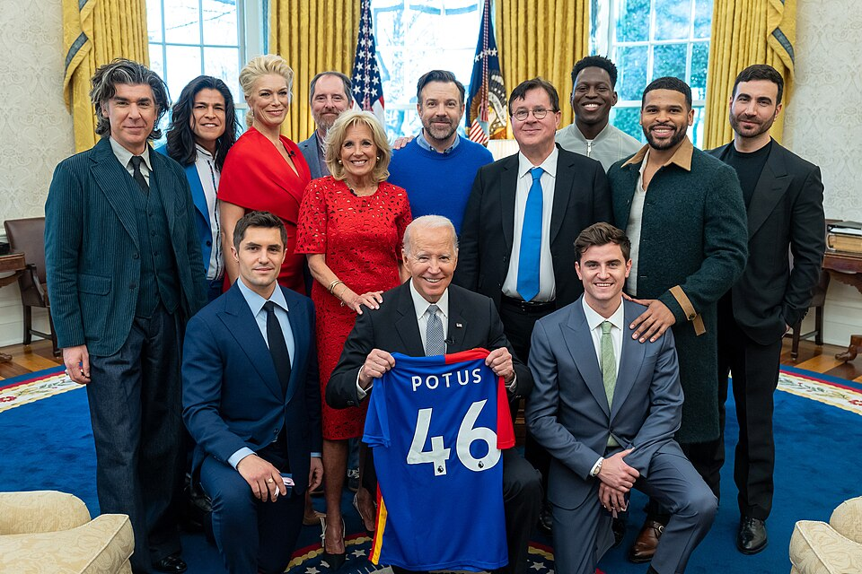
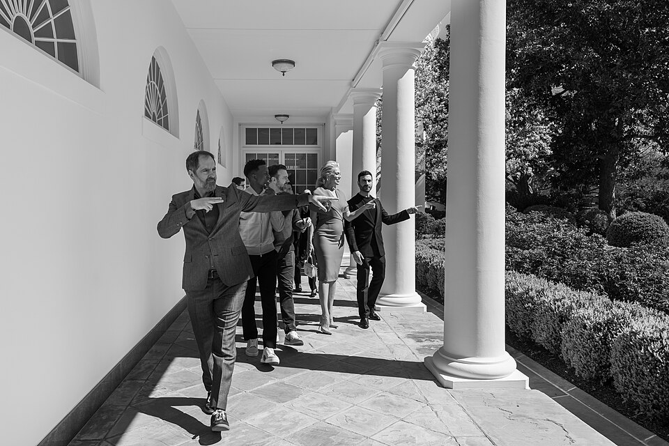

A série
Ted Lasso é uma série de comédia da Apple TV+. Conta a história de Ted, um treinador de futebol americano que vai treinar o AFC Richmond, um clube de futebol inglês, mesmo sem saber quase nada sobre este desporto.
A série ganhou o Emmy de Melhor Série de Comédia em 2021 e em 2022.
- Estreou em 2020 na Apple TV+
- Tem três temporadas
- É uma história sobre amizade, bondade e trabalho de equipa

Queres saber mais? Visita a página de Ted Lasso na Wikipédia.